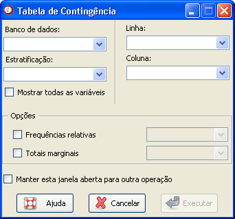

Tabela
de contingência
Tabela
de contingência
O caminho para essa janela é: Análises

Figura 1. Janela "Tabela de contingência".
Figura 1. Janela "Tabela de contingência".
O primeiro passo é selecionar o banco de dados onde estão as variáveis que se deseja descrever. Para isso, é necessário que o banco já tenha sido aberto (detalhes sobre como abrir dados ou importar dados via ODBC).
Em seguida, é necessário escolher a variável desejada para a linha, na guia "Linha", e a variável desejada para a coluna, na guia "Coluna".
Um item opcional da janela é a variável de estratificação.Quando o banco de dados é selecionado, as variáveis categorizadas como fatores de estratificação aparecerão na guia "Estratificação". Se a variável desejada não aparecer nessa guia, basta marcar o campo "Mostrar todas as variáveis" e retornar à seleção. É permitida a escolha de apenas uma variável de estratificação por tabela.
Outros dois itens opcionais são:
Freqüências relativas: Ao selecionar uma tabela de frequências cruzadas, o valor padrão calculado pelo Epi-R é a frequência absoluta para cada casela. Se desejar obter a frequência relativa de determinada variável, marque essa opção. Escolha também uma opção entre frequência relativa nas linhas, colunas ou em ambos.
Totais marginais: Selecione essa opção se desejar um total por linha ou por coluna (ou pelos dois). O padrão do Epi-R é apresentar a tabela sem os totais calculados.
Quando todas as opções estiverem selecionadas, basta clicar em "Executar". Para construir mais de uma tabela, sem precisar voltar na função acessada pelo menu Análises, marque a opção "Manter essa janela aberta para outra análise".